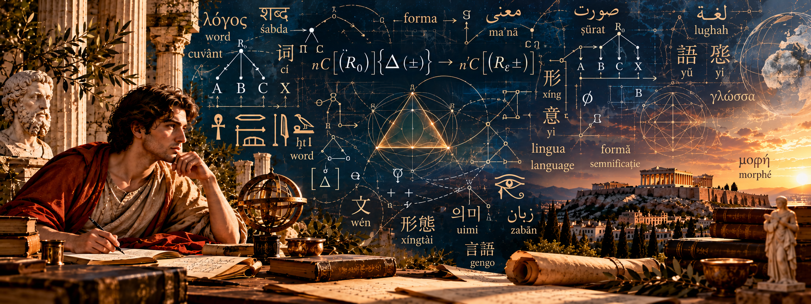

The Metamorphosis Formula
An interdisciplinary investigation of grammatical transformations and formal representations of linguistic structure.
Visit research website ↗
Independent Researcher · Linguistics · Literature · Interdisciplinary Research
Ciocioc Ion Valentin is an independent researcher whose work explores grammatical transformation, formal linguistic structures, and interdisciplinary connections between language, mathematical representation, and computation.
His research interests include morphology, morphosyntax, comparative linguistic analysis, and formal models of linguistic change. His broader intellectual interests extend to literature, poetry, and the dialogue between classical thought and contemporary knowledge.
Independent project websites, each dedicated to its own research framework.
An interdisciplinary investigation of grammatical transformations and formal representations of linguistic structure.
Visit research website ↗A formal research framework examining grammatical transformation through an operatorial architecture and distinct transformation regimes.
Visit research website ↗Open Journal of Modern Linguistics, 15(2), 281–319.
Read publication ↗Supplementary material connected to the investigation of linguistic and formal representation.
View on Figshare ↗Supplementary material concerning accent and tone within the broader linguistic research.
View on Figshare ↗Research-related repositories and computational implementations are available through the public GitHub profile.
Explore GitHub ↗Literary inquiry, poetry, and translation form a complementary dimension of the author's intellectual work, exploring the relationship between language, form, meaning, and cultural continuity.
Additional literary works and projects may be presented here as they become publicly available.
Selected public profiles and research repositories.